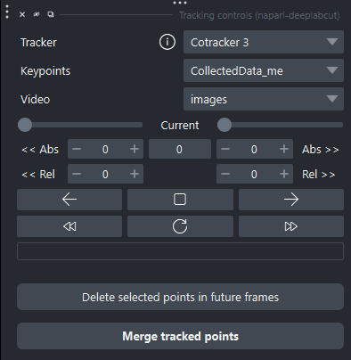

Automated annotation with point tracking#
See also
For basic usage of the annotation plugin, see Basic usage for the recommended workflow.
Note
The plugin relies on third-party open-source tracking models. Please see Models information and citation info at the end of this page for information about the tracking models used in the plugin and their citation information.
Overview#
The Tracking Controls widget is designed to help automate DeepLabCut annotation workflows:
Manually annotate a small set of keypoints on a reference frame.
Use a point tracking model to propagate those keypoints forward and/or backward in time.
Inspect, refine, delete, and merge tracked results before exporting them back to DeepLabCut.
Tracking is intended to accelerate annotation, and cannot replace manual review.
Requirements#
Tip
We recommend having a GPU available for tracking, as it can be computationally intensive and slow on CPU. Expect longer processing times on CPU, especially for longer videos or larger tracking ranges.
In napari#
Important
Before using tracking, you must:
Load a video or extracted frames as an
Imagelayer with time as the first dimension.For DLC-integrated workflows, the easiest starting point is often to drag-and-drop one of the
labeled-datafolders from your DLC project.See Recommended basic labeling workflow for more details on how to prepare your data and annotations before tracking.
Ensure you have a Points layer containing DeepLabCut-style keypoints.
If annotating from scratch, drag-and-drop the
config.yamlfile from your DLC project to create a new Points layer with the correct metadata.If loading a folder which already contains a
CollectedData_*.h5file, the plugin will automatically create a Points layer with the existing annotations.
Annotate at least one frame with valid keypoints.
Tracking is most useful on temporally continuous image sequences or videos.
See the workflow guides below for more details of the tracking process.
In your Python environment#
Skip this if you have already installed PyTorch or DeepLabCut
Important
By default, installing the [tracking] extra alone will not enable GPU support.
Check the official PyTorch installation guide for GPU support and installation instructions for your system.
If you do not have PyTorch installed, or if you are using the plugin without the DeepLabCut package installed, install with:
pip install napari-deeplabcut[tracking]
User interface#

Fig. 13 Tracking Controls widget with annotated keypoints and tracking results.#
Showing the widget#
Use:
Plugins -> napari-deeplabcut -> Tracking controls
1. Model selection#
Control |
Description |
|---|---|
Tracker |
Selects the tracking backend from |
Info button |
Hover to see tracker-specific details. |
Note
Available models may depend on your installation and optional dependencies.
2. Layer selection#
Control |
Description |
|---|---|
Keypoints |
Points layer containing manually annotated DLC keypoints |
Video |
Image layer containing the video to track |
The widget automatically updates based on layer changes.
3. Reference frame selection#
The Current spinbox always reflects the viewer’s current time index.
This frame is used as the query frame for tracking.
The model generates tracking predictions from the keypoints present on this frame and uses them as seeds to track forward and/or backward in time.
Note
Only keypoints present on the selected reference frame are used to initialize a tracking run. Neighboring frames or frames later in the video are never considered for initialization, even if they contain keypoints.
4. Frame range controls#
Tracking range can be specified relative or absolute to the reference frame.
Backward (left)#
Slider: relative negative offset
<< Abs: absolute frame index<< Rel: relative frame offset
Forward (right)#
Slider: relative positive offset
Abs >>: absolute frame indexRel >>: relative frame offset
Changing the current frame updates the valid forward/backward range automatically.
5. Tracking actions#
Button |
Action |
|---|---|
◀ |
Track backward |
◀◀ |
Track backward to first frame |
▶ |
Track forward |
▶▶ |
Track forward to last frame |
⟳ |
Track both directions |
■ |
Stop tracking |
Note
Tracking runs in the background. You can continue navigating the viewer and editing layers while it runs; results will appear as a new layer once tracking is complete.
Keyboard shortcuts#
Most tracking functions have keyboard shortcuts for easier usage.
Tip
You can see shortcuts and their status using:
Help -> Show napari-dlc shortcuts
This is only available if the Keypoint controls widget has been opened at least once.
Tracking results#
Tip
Being able to tell which results originate from which layer is very important for effectively using the plugin.
Layers can be toggled (visible/invisible) with
Vby default or by clicking the eye icon next to the layer name in the layer list.Grid mode (toggled with
Ctrl+Gby default) can also help visually separate different layers and their results.
Each tracking run creates a new Points layer:
Named automatically (
[Tracking v<XX>] Ref. layer name - t<T> - Tracker name)XXrefers to the iteration number (if multiple tracking runs are performed from the same reference layer and model)Trefers to the reference frame index used to generate the tracking result
Visually distinct from manual annotations:
Cross symbol
Slight transparency
Green border
Note
The original annotation layer is never modified by tracking. To incorporate tracking results into your annotation data, use the merge workflow described below.
Important
If you run into accessibility issues with the default visualization style, please open an issue. We would be happy to expand settings and provide more customization options if requested.
Refinement and saving tools#
Danger
There is currently no undo option. Any deletion or merging action you perform on layers is irreversible, so we recommend keeping track of your layers and using visibility toggles to compare before and after merge results.
Overwrite warnings will be shown where relevant.
Deleting tracked points in future frames#
Tracking results are often satisfactory for a certain number of frames, then start to drift or produce errors. For example, a tracked point may start following the background instead of the intended body part, or jump to a different body part or individual. Because of this sometimes unavoidable drift, we provide a way to delete future tracked points while keeping the current frame intact.
Select a tracking result Points layer.
This action is always disabled for the original annotation layer.
Select one or more points on the current frame.
Click Delete selected points in future frames.
Only exact identity matches in future frames are removed.
Important
Points on the current frame are preserved so you can correct them and re-run tracking.
This allows you to run tracking, and iteratively progress through the frames, correcting keypoints as you go, and merging the final results back into the original annotation layer when you are satisfied, see below for more details on merging.
Merging tracked points#
The Merge tracked points workflow allows you to:
Combine multiple tracking passes
Decide how to handle overlaps or conflicts
Produce a clean final annotation layer
This is especially useful when tracking was run from multiple reference frames. There are several merge options available to help you achieve the desired result:
Fill missing only: Existing keypoints are always preserved. Missing keypoints in frames are filled with tracked results.
Intended for merging final tracking results into the original annotation layer.
Overwrite existing target points: Tracked keypoints overwrite existing ones in the target layer.
Intended for replacing poor tracking results with a new, updated tracking pass.
Important
Tracking result layers are intermediate working layers.
To save results back into the DeepLabCut project, first merge tracked points into a standard DLC annotation layer, then save that final annotation layer.
Tracking layers will be saved as CSVs, which are not compatible with DLC project annotations and will not be written back to the CollectedData_*.h5 workflow.
Workflow example#
Loading and annotating from scratch#
Create a DeepLabCut project and add the videos to label.
Extract frames from the videos.
Currently implemented trackers prefer continuous video frames. We recommend avoiding large gaps in frames (“jumpy” video), which can make tracking more difficult.
For this reason, you may want to run tracking on the original video, then extract frames with tracking/refined annotations directly.
Go to the
labeled-datafolder, then drag-and-drop a folder with extracted frames into napari.This creates an Image layer with the frames.
Drag-and-drop the
config.yamlfile from your DLC project into napari.This creates an empty Points layer with the correct DLC metadata, ready for annotation.
Annotate keypoints on a reference frame.
Go to Tracking.
Loading and annotating from existing DLC annotations#
Go to the
labeled-datafolder, then drag-and-drop a subfolder with extracted frames into napari.This creates an Image layer with the frames.
Existing annotations from the
CollectedData_*.h5file are loaded as a Points layer.
Inspect existing annotations, select a reference frame, and refine keypoints if needed.
Go to Tracking.
Tracking#
Open the Tracking Controls widget (
Plugins -> napari-deeplabcut -> Tracking controls).Go to the desired reference frame, with annotated keypoints visible.
Select the forward/backward tracking range using the sliders and track forward/backward, or track to the beginning/end of the video using the seek buttons.
Inspect the tracking results.
You can use Show trajectories in the Keypoint Controls dock widget to visualize the trajectories of tracked points across frames, which can help identify where tracking starts to drift.
The plot is filtered by selected keypoints, so you can select a subset of points to inspect their trajectories more closely.
If there are problematic points:
On the frame where tracking starts to drift, select the problematic point(s) and click Delete selected points in future frames to remove incorrect tracking results while preserving the tracked point(s) on the current frame.
Refine the keypoint(s) on the current frame by correcting their position.
Re-run tracking from that frame to propagate the correction forward or backward in time.
Merge the new tracking result back into the previous tracking layer when appropriate (for example, using Overwrite existing target points).
Repeat until satisfied with the tracking result, then merge into the original annotation layer using Fill missing only to preserve your original annotations and only add tracked keypoints in frames where you do not yet have manual annotations.
Save the final DLC annotation layer (usually the original annotation layer after merging).
Tracking result layers are intermediate working layers and are not written back directly as DLC project annotations.
Saving the final merged annotation layer is the step that writes back to the DLC project folder and updates the
CollectedData_*.h5workflow.
Note
The Show trails feature is currently not available for tracking result layers. Please open an issue if this is something you would like to see in the future.
Troubleshooting#
No keypoints found on reference frame#
Ensure that:
The correct Points layer is selected in the tracking controls dropdown menu.
You are on the intended frame.
Points exist exactly on that frame index.
Models information and citation info#
CoTracker3#
CoTracker is a fast transformer-based model that can track any point in a video. It brings to tracking some of the benefits of OpticalFlow.
Empirical observations
This information is based on our own testing and experience with the model. Please share any feedback or insights you have with us!
Strengths: fast on GPU, can output 10-100 frames of satisfactory tracking results, depending on difficulty.
Limitations: strong preference for continuous video frames; struggles with large gaps in frame indices (for example, automated DLC frame extraction via clustering, or uniform extraction with a large step size). Consider running tracking on the original video, then extracting frames with tracking/refined annotations directly.
Limitations and future directions#
Important considerations#
As correcting labels can be time-consuming, annotating by hand may sometimes be faster than running tracking and heavily correcting its results.
The benefits are mostly for long, continuous videos with many frames to annotate, where tracking can save time by propagating annotations across many frames at once.
In very high-variability or very challenging videos, annotating by hand may still be more efficient than running tracking and correcting its results, especially if you only have a few frames to annotate.
Manual curation is still essential for good tracking results, and the tracking models do not fully replace the need for manual annotation.
In practice, a mix of hand-labeled hard frames and tracked easy frames should often works best.
Be mindful of training set imbalance: if you flood your training set with easy frames that are well tracked, and only have a few hand-picked frames with rare or difficult poses, your model may not learn to generalize well to those challenging poses.
Future features#
We currently only provide CoTracker3 as a model. It is, however, relatively easy to add new models to the plugin via the registry; feel free to ask if you would like to contribute a model or see a specific model added.
Generic napari saves or exports of tracking result layers are not part of the recommended DeepLabCut workflow. Tracking result layers are intermediate working layers; to preserve results in a DLC project-compatible way, merge them into a standard annotation layer and save that layer.
If there is demand, we may add support for saving and loading tracking layers as separate files in the DLC project folder.
If you have ideas for specific refinement tools, shortcuts, or other features that would be useful to add to the plugin, please share them with us.
Getting help and providing feedback#
GitHub issues: for bug reports, feature requests, or general questions. We welcome your feedback and contributions.
Discussion forum: for general discussion, questions, and sharing your work with the community. We also provide troubleshooting help and guidance here, but may open an issue for actual bugs or feature requests directly on GitHub, as well as request more information there.